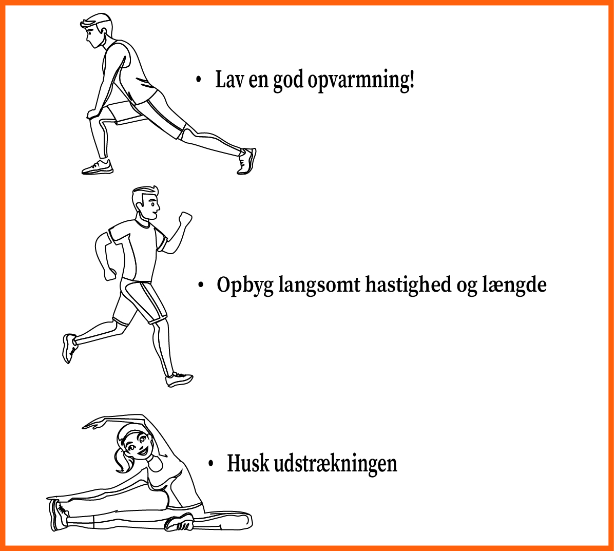

Spørgsmålet om hvorvidt at løb er dårligt for knæ og fødder, er et vi får meget her på magasinet. Heldigvis kan vi fortælle at forskning viser, at løb i sig selv ikke er dårligt for knæ og fødder, så længe du bare løber rigtigt og gradvist opbygger styrke. At styrke musklerne omkring knæene og fødderne gennem øvelser og langsomt øge din løbedistance er nøglen til at holde dine muskler og led sunde.
Er du bekymret for skader, når du løber?
Det er vigtigt at passe på kroppen, så du kan nyde løb uden at blive skadet. Specielt som nybegynder er det vigtigt at kende og huske sine grænser
Men hvordan undgår man så skader når man løber? Svaret er faktisk ret simpelt, hvis du følger nogle få grundlæggende råd.

For at undgå skader anbefales det at starte med et roligt tempo, især hvis du er nybegynder. Det giver kroppen tid til at tilpasse sig. Når du føler dig mere komfortabel, kan du gradvist øge farten. Husk, at kroppen har brug for tid til at vænne sig til nye belastninger. Det afhænger derfor af dit niveau og mål om det er bedst at løbe langsomt eller hurtigt.
Så alt i alt er det vigtigste at huske at varme op, før du løber, og strække ud bagefter. Lyt altid til din krop – smerte er et tegn på, at noget ikke er, som det skal være. Hvis du følger disse enkle trin, kan du løbe trygt og undgå unødvendige skader.
Med den rette tilgang kan du nyde løb uden at bekymre dig om skader!
For at finde fodtøj og udstyr til din løbetræning, kan du læse vores artikel "Det korrekte fodtøj og udstyr til at undgå skade"